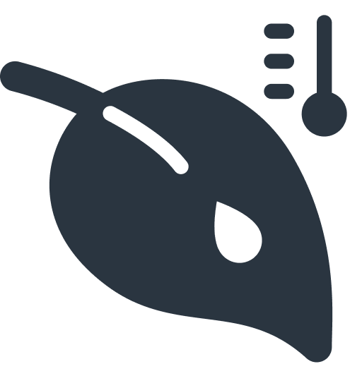

flowchart LR
node2[node]
node7[node]
input1[(dataset)]
input2[(dataset)]
output[(dataset)]
input1 --> node2
input2 --> node2
subgraph pipeline[pipeline]
direction LR
node2 --> node7
%% node3 --> node5 --> node7
%% input3 --> node5
end
node7 --> output
style pipeline color:#000
Python & kedro
pour
l’agriculture de précision
Paul Arnaud & Flavien Lambert
Data Engineering Team
Data Engineering Team
L’agtech au pays de la patate
Sencrop
- 35000 stations météorologiques réparties sur toute l’Europe

température de l'air & hygrométrie

direction et vitesse du vent
pluviométrie
point de rosée
Spatialisation
- Est-ce que l’on peut fournir de la donnée météorologique de qualité sur n’importe quelle localisation sur le territoire ?
- utilisation de maillage
h3: index spatial hiérarchique - comparaison des mesures de stations avec les médianes sur les mailles

Un, deux, trois… ◆ kedro!
kedro en trois mots
- librairie de transformations de données
- découplage entre les sources de données et les transformations
node- fonction — au sens Python — avec un/des
datasetd’entrée/sortie
- fonction — au sens Python — avec un/des
pipeline- séquence de
node
- séquence de
catalog- un ensemble de
dataset
- un ensemble de
pipelines & nodes
flowchart TB
node2[map_locations_to_grids]
node7[extract_unique_grid_ids]
input1[(locations)]
input2[h3-grid-resolution]
output[(unique-grid-ids)]
subgraph pipeline[map_locations_to_grids]
direction TB
node2 --> node7
%% node3 --> node5 --> node7
input1 --> node2
input2 --> node2
%% input3 --> node5
node7 --> output
end
style pipeline color:#000
/src/pipelines/map_locations_to_grids/pipeline.py
from typing import Any
from kedro.pipeline import Pipeline, node
from .nodes import map_locations_to_grids, extract_unique_grid_ids
def create_pipeline(**kwargs: Any) -> Pipeline:
return Pipeline(
nodes=[
node(
map_locations_to_grids,
inputs={
"locations": "locations",
"resolution": "params:h3-grid-resolution",
},
outputs="grids",
),
node(
extract_unique_grid_ids,
inputs={"grids": "grids"},
outputs="unique-grid-ids",
)
],
)/src/pipelines/map_locations_to_grids/nodes.py
import h3
import pandas
def map_locations_to_grids(
locations: pandas.DataFrame, resolution: int
) -> pandas.DataFrame:
return pandas.DataFrame(
data=[
{
"location_id": location["id"],
"grid_id": h3.geo_to_h3(
lat=location["latitude"],
lng=location["longitude"],
resolution=resolution,
),
}
for location in locations.to_dict(orient="records")
]
)
def extract_unique_grid_ids(grids: pandas.DataFrame) -> pandas.DataFrame:
return grids["grid_id"].unique()catalog & environment
catalog: définition desdatasetd’entrée et de sortieenvironment: ensemble ducataloget d’un jeu de paramètres
/conf/test-local/catalog.yaml
structure du projet
- séparation des sources de données et des pipelines
Production, YAML modifié, sérénité
Dumas du tuyau : trois écrivains et un lecteur
flowchart LR
measures[(<br>mesures<br>des stations)]
getstatistics[<br>calculs<br>des statistiques]
meteoblue[(<br>meteoblue<br>API)]
getforecasts[<br>récupération<br>des prévisions]
gethistory[<br>récupération<br>de l'historique]
forecasts[(<br>prévisions)]
history[(<br>historique)]
statistics[(<br>statistiques)]
measures --> getstatistics --> statistics
meteoblue --> getforecasts --> forecasts
meteoblue --> gethistory --> history
combine[<br>combinaison<br>des sources] --> timeseries[(<br>série temporelle<br>finale)]
statistics --> combine
forecasts --> combine
history --> combine
Kafka sur le rivage
- kafka n’est pas le sujet mais c’est notre dataset de production !
/conf/test-measures/catalog.yml
Vers des pipelines tout-terrain ?
La perspective du manager et de l’ingénieur
- structure rigide : expérience de développement excellente
- PoC à la production en un temps relativement court
- réactivité de la communauté : Slack avec 2200 inscrit·es
Merci de votre attention !